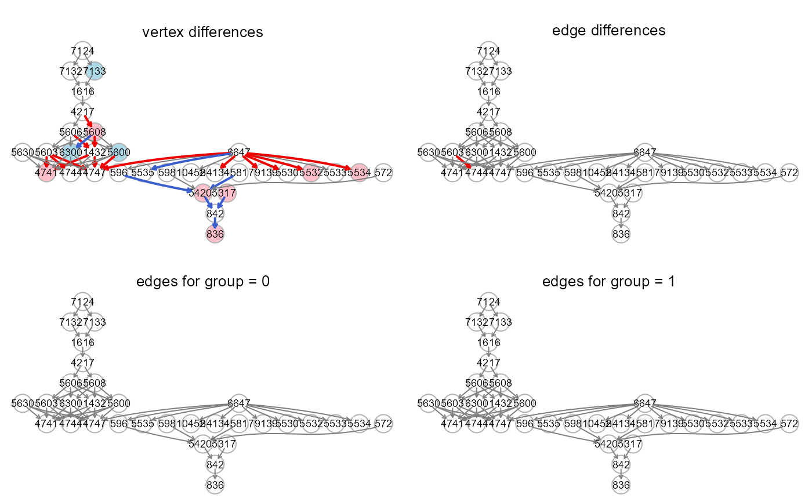

Add vertex and edge color attributes to an igraph object,
based on a fitting results data.frame generated by
SEMrun.
A data.frame of estimated parameters and p-values, derived
from the fit object returned by SEMrun.
As an alternative, the user may provide a "gest" or "dest" data.frame
generated by SEMrun.
An igraph object.
group A binary vector. This vector must be as long as the number of subjects. Each vector element must be 1 for cases and 0 for control subjects.
Multiple testing correction method. One of the values
available in p.adjust. By default, method is set
to "none" (i.e., no multiple test correction).
Significance level for node and edge coloring
(by default, alpha = 0.05).
A vector of three color names. The first color is given
to nodes with P-value < alpha and beta < 0, the third color is given
to nodes with P-value < alpha and beta > 0, and the second is given
to nodes with P-value > alpha. By default,
vcolor = c("lightblue", "white", "pink").
A vector of three color names. The first color is given
to edges with P-value < alpha and regression coefficient < 0, the
third color is given to edges with P-value < alpha and regression
coefficient > 0, and the second is given to edges with P-value > alpha.
By default, vcolor = c("blue", "gray50", "red2").
A vector of two values. The first value refers to the basic edge width (i.e., edges with P-value > alpha), while the second is given to edges with P-value < alpha. By default ewidth = c(1, 2).
Currently ignored.
An igraph object with vertex and edge color and width attributes.
# \donttest{
# Model fitting: node perturbation
sem1 <- SEMrun(graph = alsData$graph, data = alsData$exprs,
group = alsData$group,
fit = 1)
#> NLMINB solver ended normally after 6 iterations
#>
#> deviance/df: 12.66492 srmr: 0.3036439
#>
#> Brown's combined P-value of node activation: 8.945067e-13
#>
#> Brown's combined P-value of node inhibition: 0.02173369
#>
est1 <- parameterEstimates(sem1$fit)
# Model fitting: edge perturbation
sem2 <- SEMrun(graph = alsData$graph, data = alsData$exprs,
group = alsData$group,
fit = 2)
#> Estimating optimal shrinkage intensity lambda (correlation matrix): 0.4547
#>
#> NLMINB solver ended normally after 17 iterations
#>
#> deviance/df: 16.74697 srmr: 0.3247999
#>
#> Brown's combined P-value of edge activation: 0.01363441
#>
#> Brown's combined P-value of edge inhibition: 0.8656964
#>
est20 <- subset(parameterEstimates(sem2$fit), group == 1)[, -c(4, 5)]
est21 <- subset(parameterEstimates(sem2$fit), group == 2)[, -c(4, 5)]
# Graphs
g <- alsData$graph
x <- alsData$group
old.par <- par(no.readonly = TRUE)
par(mfrow=c(2,2), mar=rep(1,4))
gplot(colorGraph(est = est1, g, group = x, method = "BH"),
main = "vertex differences")
gplot(colorGraph(est = sem2$dest, g, group = NULL),
main = "edge differences")
gplot(colorGraph(est = est20, g, group = NULL),
main = "edges for group = 0")
gplot(colorGraph(est = est21, g, group = NULL),
main = "edges for group = 1")

par(old.par)
# }